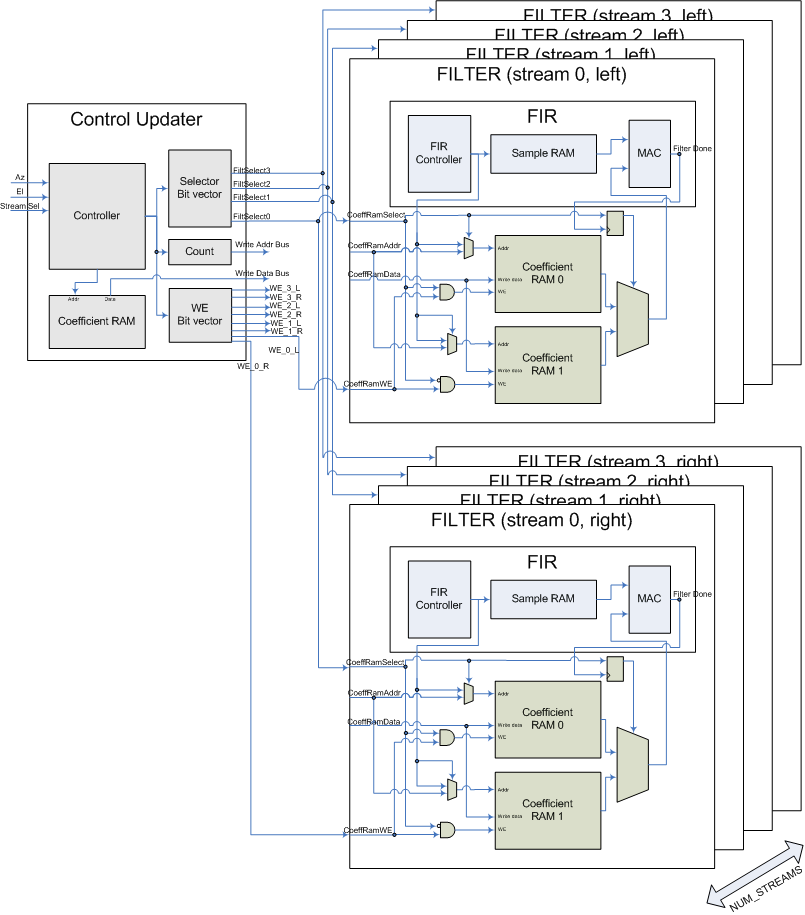
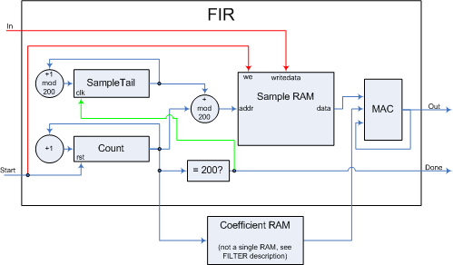
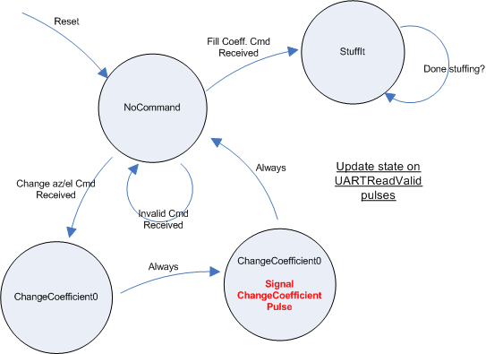
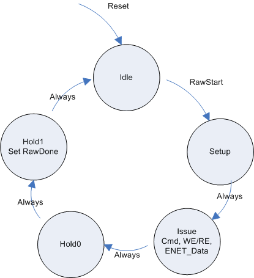
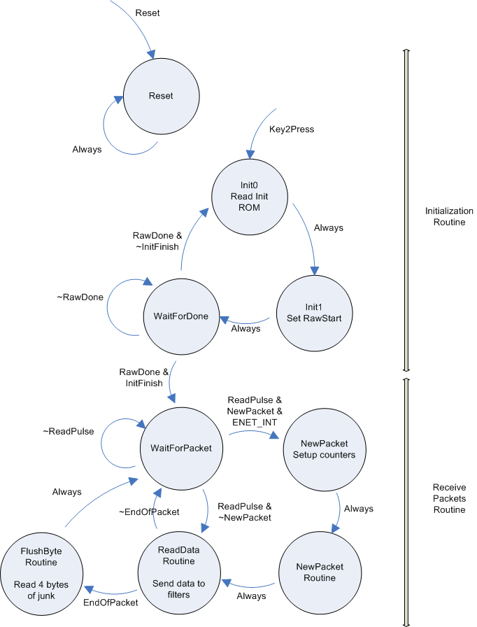
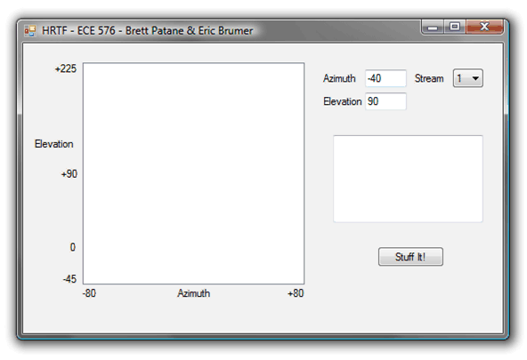

|
Head Related Transfer Function
ECE 576 - Fall 2006 Brett Patane & Eric Brumer Introduction & Architecture | Design | Analysis & Conclusion | Appendix |
DesignThe following diagram shows the organization of our filter setup for multiple audio streams. Note the inputs of this system are the input azimuth, elevation, and a stream selector, sent from the GUI through the UART. The output of this system is the audio sent to the user. Also note that there are two FILTER blocks (which interally are identical). The top FILTER block is for the left channel of the audio stream (and its filter will perform the HRTF for the left ear), while the bottom FILTER block is for the right channel of the audio stream. The lines labeled Filter Select, Write Addr and Coeff Data attach to the inputs to both FILTER blocks (not shown in the diagram to reduce clutter). The write enable lines (WE_L and WE_R) are the only different between the FILTER blocks. We will discuss each of these in detail in the following sections, and put it all together as we go. 
Note that in order to minimize complexity in debugging and developing our code, we did all of our FPGA logic in hardware and opted not to use a NIOS II processor. FIRThe FIR module (implemented in fir.v) is a multicycle 200-tap FIR filter. A functional diagram of the FIR filter is provided. 
The inputs and outputs of the module are:
The commanding code is implemented in DE2_TOP.v and impements the following state machine: 
Here we begin in NoCommand until we receive a valid command (0x0000 or 0x0001). If we receive 0x0000 we move into the StuffIt state, where we load 250,000 coefficients into the external SRAM. We loop in this state until we have loaded all the coefficients, and then return to NoCommand. Running at 115kbps, this takes approximately one minute to complete. If we receive 0x0001 we move into ChangeCoefficient0 where we load the azimuth, then into ChangeCoefficient1 where we load the elevation. Upon leaving ChangeCoefficient1 we signal ChangeCoefficientPulse which triggers the control logic, changing the coefficients in the RAM as described in the control updater section of this report. Ethernet & Multiple StreamsDE2 HardwareWe use the audio line in for stream 0 (left & right channels of stereo sound). For more audio streams, we transfer packets from a PC to our system over ethernet (100Mbit). Using the DM9000A datasheet, we wrote a hardware driver for the chip such that we could receive raw ethernet frames. The DM9000A interface is suprisingly complicated. It contains 50+ registers which can be manipulated by using the following sequence:
This looks simple, but there are restrictions to the above. You must wait for some time between steps 1 and 2. The wait time is at least 1 cycle, but can be 2 cycles, 4 cycles or even 10us if we are reading/writing from/to certain registers. See pages 46-47 for the necessary timing. To keep things simple in our ethernet driver, whenever we are writing to DM9000A registers, we wait 300 cycles between writes (more than 10us worth). And, whenever we are reading DM9000A registers, we wait 4 cycles (the max number of waits any read can have). Further, there are setup and hold time restrictions for the ENET_DATA and ENET_CMD lines. We have a setup time of one full cycle, and a hold time of two full cycles (running at 18MHz) to prevent errors in communicating with the DM9000A. Any less and we were not able to write to the chip. We implement the above steps using a state machine (which we call the RawEthernet state machine) in Enet_IF.v. The state machine is given as follows: 
We begin in the idle state. When some part of our system wishes to communicate with the DM9000A, they:
When the Raw state machine sees a RawStart pulse, it enters the Setup state, where it puts ENET_DATA and ENET_CMD on the bus. In the Issue state, it drops ENET_WE_N or ENET_RE_N low (according to RawRW). Then we raise the enable lines but keep ENET_DATA and ENET_CMD on the bus for two more cycles of hold time. So for example, if we wanted to write the data 0x3F to the register 0xFE (which clears interrupt flags), we perform the following operations:
The chip must be initialized using a certain procedure:
We perform this procedure through an initialization ROM, for which each 16-bit entry contains the RW and AD bits, and the 8-bits of data to write. The state machine initialization is given as follows: 
The top half of the state machine contains our initialization state. We remain in the Reset state until Key2 is pressed. Key2 sends the state machine to Init0, where we begin reading the ROM. The ROM data is interpreted in Init1, where we set RawStart high for one cycle, and one initialization command is underway. We enter the WaitForDone state and remain there until the command has been executed successfully. If there are more commands to process (checked by a static value) we go back to state Init0. If we are done with initialization we enter the WaitForPacket, where we wait for audio packets to be sent to our system. When we are in WaitForPacket, we wait until we should read an audio sample (signalled by ReadPulse) and then process that audio sample. If we are reading a new packet, we must strip & process the header off the next packet (explained later). If we are in the middle of reading a packet we just read the next data frame. We used the audio_in_ready signal from the audio DAC in order to sample data from the DM9000A at 48kHz. There is also an interrupt line (called ENET_INT) that we have configured to go high when a packet is received. We use this signal to start reading data from the ethernet port for the first packet only. After this, we rely on the buffer being kept filled with useful sample data. Therefore, we ignore audio_in_ready until the very first packet is received, and from then on we use the audio_in_ready signal to sample the DM9000A. The PC sends the DE2 board raw ethernet frames. For example, in our tests, we used the following C# code to send 480 bytes of data to the DE2 board:
byte[] packet = new byte[480];
for (int i = 0; i < 480; i++) {
packet[i] = (byte)i;
}
rawether.DoWrite(packet); // write packet
However, when we read the data (2-byte words at a time, little-endian) from the DM9000A (done by reading the DM9000A's 0xF2 register), we get the following data from the DM9000A:
So, at the start of every packet we must strip off the first word read (the two-bytes of status), and we process the second word read (the length of the packet) to know how many bytes to read from the packet. We also need to throw away the last four bytes we read (checksum). Further, in order for reads to work, before reading the first status word we must perform a read from 0xF0. This read apparently pre-loads the word for a read from 0xF2. So, the procedure at the beginning of each packet is then:
And, if we are in the middle of processing a packet, we just issue a read to 0xF2 to get the next byte of data in the packet. If we are at the end of a packet we need to read 4 bytes of checksum. The procedure at the end of each packet is then:
This is all shown in the bottom half of the above state machine, and is implemented in Eth_IF.v Host PCSending raw ethernet packets from a PC running Windows is not trivial as Windows drivers provide high-level socket interfaces for UDP and TCP (not usually raw ethernet packets). We found a neat C++ driver package and accompanying C# interfacing code to use raw ethernet. The driver we use is available here, along with installation instructions and C# interfacing code. This lets you write raw ethernet frames to our DE2 interfacing code. Data FlowWe tried to keep data flow as simple as possible. Basically, the PC will transfer data to the DE2 at 48kHz, and the DE2 will read data from the DM9000A at 48kHz. To make this work, we need to:
We take a stereo mp3 audio track, use freely available software on the web to convert the mp3's to 16-bit, 48kHz mono audio samples. We then use the C# ethernet driver to send 13 packets (each paket=960bytes) every 20ms using an OS timer. This ensures that the buffer in the DM9000A always remains full, and always has audio samples ready to filter. The wav file format is very simple. There are 44 bytes of header, followed by raw data. Since our wav file is mono, 16-bit, after 44 bytes of header we read 16-bit words as samples. GUIOur GUI contains three components, as shown in the picture below. 
The first component is the 2-D input panel of Elevation and Azimuth. As the user clicks and holds the left-mouse button and drags the cursor around the plot, the sound source moves. In the picture, the user has clicked the mouse such that the azimuth/elevation are -40/90 degrees. The second component is the stream selector. In the picture, the user is setting the azimuth and elevation for stream 1, such that the HRTF coefficient RAMs are only updated for the specified stream. The third component to the GUI is the 'StuffIt' button which sends all 250,000 coefficients to the DE2 board over a serial port. | |||||||||||||||||||||||||||||||||||||||||||||||||||||||||||||||||||||||||||||||||||||||||||||||||||||||||||||||